Código
library(tidyverse)
library(knitr)library(tidyverse)
library(knitr)Imaginemos imágenes de dígitos escritos a mano, como las del conjunto MNIST. Si cada imagen tiene \(28 \times 28\) píxeles, cada dígito puede representarse como un punto con 784 variables. En principio, el espacio posible es enorme: cualquier combinación de intensidades de píxeles sería un punto válido.
Pero los dígitos reales no ocupan uniformemente ese espacio. La mayoría de combinaciones posibles de píxeles no parecen números. Los dígitos viven cerca de estructuras de dimensión mucho menor: formas con trazos, bucles, inclinaciones, anchuras y curvaturas. Reducir dimensión consiste en encontrar características más informativas que las variables originales.
PCA hace una versión lineal de esta idea. Construye un nuevo sistema de coordenadas que concentra la mayor cantidad posible de variabilidad en los primeros ejes. No descubre conceptos como «bucle» de forma semántica, pero sí combinaciones de píxeles que recogen patrones dominantes de variación.
Antes de trabajar con cientos de variables, podemos entender casi todo el mecanismo observando qué ocurre al proyectar una nube bidimensional sobre una recta.
set.seed(123)
n <- 120
z1 <- rnorm(n, sd = 2.5)
z2 <- rnorm(n, sd = 0.35)
theta <- pi / 5
R <- matrix(c(cos(theta), -sin(theta), sin(theta), cos(theta)), nrow = 2)
X_sim <- cbind(z1, z2) %*% t(R)
colnames(X_sim) <- c("x1", "x2")
pca_sim <- prcomp(X_sim, center = TRUE, scale. = FALSE)
ejes_sim <- tibble(
componente = c("PC1", "PC2"),
x = pca_sim$rotation[1, ] * c(4, 2),
y = pca_sim$rotation[2, ] * c(4, 2)
)
as_tibble(X_sim) |>
ggplot(aes(x1, x2)) +
geom_point(color = "gray40", alpha = 0.8) +
geom_segment(
data = ejes_sim,
aes(x = 0, y = 0, xend = x, yend = y, color = componente),
arrow = grid::arrow(length = grid::unit(0.18, "cm")),
linewidth = 1.1,
inherit.aes = FALSE
) +
coord_equal() +
labs(
title = "Una nube alargada no llena el plano",
x = "x1", y = "x2", color = "Componente"
) +
theme_minimal()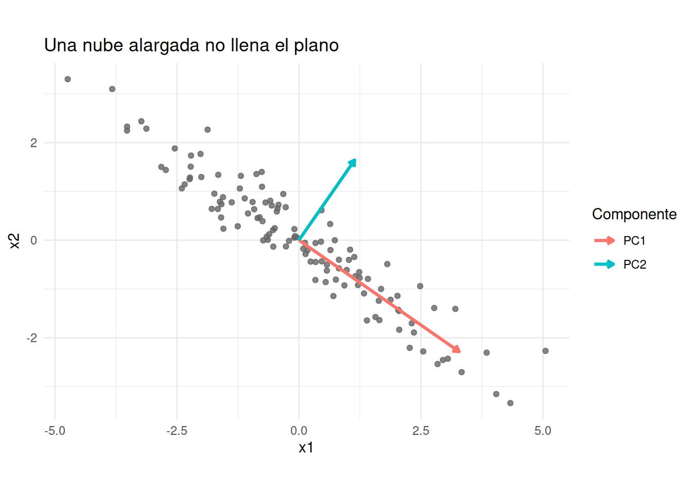
La primera componente apunta en la dirección donde la nube se extiende más. La segunda es perpendicular y recoge la variabilidad restante.
PCA conserva direcciones de alta variabilidad. Eso no garantiza que sean las más relevantes para cualquier pregunta aplicada.
Supongamos que los datos están centrados y representamos el individuo \(i\) mediante el vector columna \(x_i\). Elegimos una dirección unitaria
\[ a = \begin{pmatrix} a_1\\ \vdots\\ a_p \end{pmatrix}, \qquad a^\top a=1. \]
Su coordenada al proyectarlo sobre esa dirección es el escalar
\[ z_i=a^\top x_i. \]
Para volver al espacio original usando solo esa coordenada, reconstruimos
\[ \hat x_i=z_i a=aa^\top x_i. \]
Así, \(z_i\) indica dónde cae el individuo sobre el nuevo eje, \(\hat x_i\) es el punto proyectado y \(x_i-\hat x_i\) es la parte que se pierde.
a_pc1 <- pca_sim$rotation[, 1]
z_pc1 <- drop(X_sim %*% a_pc1)
X_proy_pc1 <- tcrossprod(z_pc1, a_pc1)
indices_muestra <- unique(round(seq(4, n, length.out = 14)))
segmentos_proyeccion <- tibble(
x1 = X_sim[indices_muestra, 1],
x2 = X_sim[indices_muestra, 2],
x1_proy = X_proy_pc1[indices_muestra, 1],
x2_proy = X_proy_pc1[indices_muestra, 2]
)
as_tibble(X_sim) |>
ggplot(aes(x1, x2)) +
geom_abline(
slope = a_pc1[2] / a_pc1[1], intercept = 0,
color = "#2c7fb8", linewidth = 0.9
) +
geom_segment(
data = segmentos_proyeccion,
aes(xend = x1_proy, yend = x2_proy),
linetype = "dashed", color = "gray45"
) +
geom_point(color = "gray55", alpha = 0.45) +
geom_point(
data = segmentos_proyeccion,
aes(x = x1_proy, y = x2_proy),
color = "#d95f0e", size = 2
) +
coord_equal() +
labs(
title = "Proyección ortogonal sobre una dirección",
subtitle = "Los puntos naranjas son las reconstrucciones sobre la recta",
x = "x1", y = "x2"
) +
theme_minimal()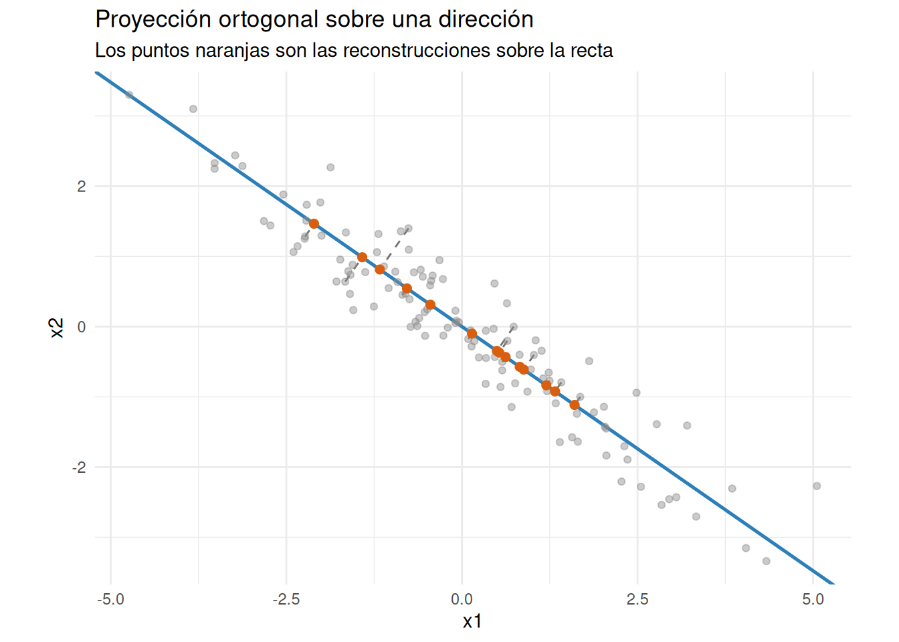
PCA no maximiza la longitud de la flecha que dibujamos, sino la dispersión de las coordenadas \(z_i\) después de proyectar los individuos. Comparemos PC1 con la dirección perpendicular, PC2.
preparar_proyeccion <- function(a, direccion) {
z <- drop(X_sim %*% a)
reconstruccion <- tcrossprod(z, a)
error <- sum((X_sim - reconstruccion)^2)
tibble(
x1 = X_sim[, 1],
x2 = X_sim[, 2],
x1_proy = reconstruccion[, 1],
x2_proy = reconstruccion[, 2],
direccion = paste0(
direccion,
"\nVarianza = ", round(var(z), 2),
"; error = ", round(error, 1)
)
)
}
comparacion_proyecciones <- bind_rows(
preparar_proyeccion(pca_sim$rotation[, 1], "Dirección PC1"),
preparar_proyeccion(pca_sim$rotation[, 2], "Dirección perpendicular")
)
rectas_proyeccion <- tibble(
direccion = unique(comparacion_proyecciones$direccion),
pendiente = pca_sim$rotation[2, ] / pca_sim$rotation[1, ]
)
comparacion_proyecciones |>
ggplot(aes(x1, x2)) +
geom_abline(
data = rectas_proyeccion,
aes(slope = pendiente, intercept = 0),
color = "#2c7fb8", linewidth = 0.8
) +
geom_segment(
aes(xend = x1_proy, yend = x2_proy),
color = "gray55", alpha = 0.28
) +
geom_point(color = "gray25", alpha = 0.65, size = 1.2) +
facet_wrap(vars(direccion)) +
coord_equal() +
labs(
title = "Más varianza proyectada, menos error de reconstrucción",
x = "x1", y = "x2"
) +
theme_minimal()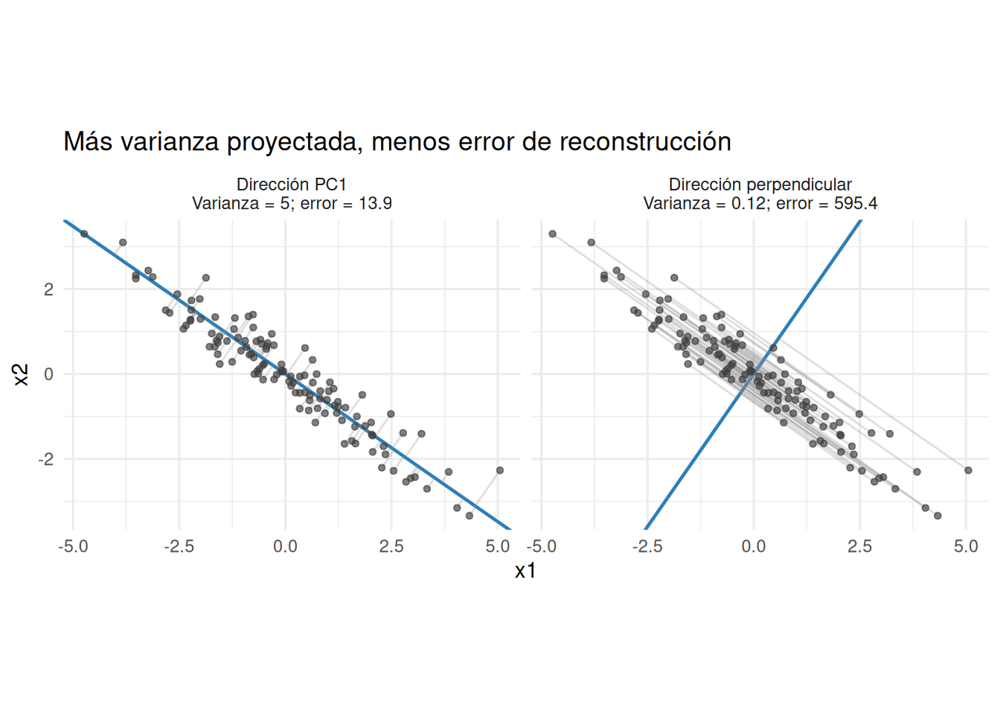
En PC1 las proyecciones quedan muy dispersas y los segmentos punto–proyección son globalmente cortos. En la dirección perpendicular ocurre lo contrario. Las distribuciones de los scores hacen visible la diferencia de dispersión.
tibble(
`PC1: dirección de máxima varianza` = drop(X_sim %*% pca_sim$rotation[, 1]),
`PC2: dirección perpendicular` = drop(X_sim %*% pca_sim$rotation[, 2])
) |>
pivot_longer(everything(), names_to = "direccion", values_to = "score") |>
ggplot(aes(score, fill = direccion)) +
geom_density(alpha = 0.55, show.legend = FALSE) +
facet_wrap(vars(direccion), scales = "free_y") +
labs(title = "Distribución de las coordenadas proyectadas", x = "Score", y = "Densidad") +
theme_minimal()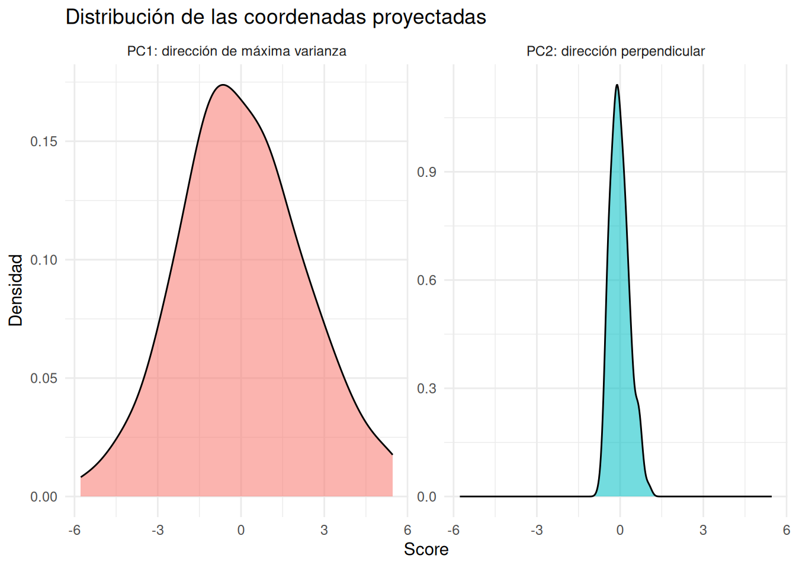
La proyección y el residuo son ortogonales. Por el teorema de Pitágoras,
\[ \|x_i\|^2=\|\hat x_i\|^2+\|x_i-\hat x_i\|^2. \]
Al sumar sobre todos los individuos,
\[ \sum_i\|x_i\|^2 = \sum_i\|\hat x_i\|^2 + \sum_i\|x_i-\hat x_i\|^2. \]
La cantidad de la izquierda es fija. Además, como \(a\) tiene norma uno, \(\|\hat x_i\|^2=z_i^2\). Por tanto, maximizar la varianza de los scores equivale a minimizar la suma de errores cuadrados de reconstrucción.
Otra forma de ver el problema es recorrer todas las direcciones del plano. Si
\[ a(\theta)= \begin{pmatrix} \cos\theta\\ \sin\theta \end{pmatrix}, \]
la función que PCA maximiza es \(V(\theta)=a(\theta)^\top Sa(\theta)\).
S_sim <- cov(X_sim)
angulos <- seq(0, pi, length.out = 361)
direcciones <- cbind(cos(angulos), sin(angulos))
varianzas_angulo <- apply(
direcciones,
1,
function(a) drop(t(a) %*% S_sim %*% a)
)
angulo_maximo <- angulos[which.max(varianzas_angulo)]
tibble(angulo = angulos, varianza = varianzas_angulo) |>
ggplot(aes(angulo, varianza)) +
geom_line(color = "#2c7fb8", linewidth = 1) +
geom_vline(xintercept = angulo_maximo, linetype = "dashed", color = "#d95f0e") +
annotate(
"point", x = angulo_maximo, y = max(varianzas_angulo),
color = "#d95f0e", size = 2.5
) +
scale_x_continuous(
breaks = c(0, pi / 4, pi / 2, 3 * pi / 4, pi),
labels = c("0", expression(pi / 4), expression(pi / 2), expression(3 * pi / 4), expression(pi))
) +
labs(
title = "Varianza de la proyección según la dirección",
subtitle = "El máximo coincide con PC1, salvo el signo arbitrario del eje",
x = expression(theta), y = "Varianza proyectada"
) +
theme_minimal()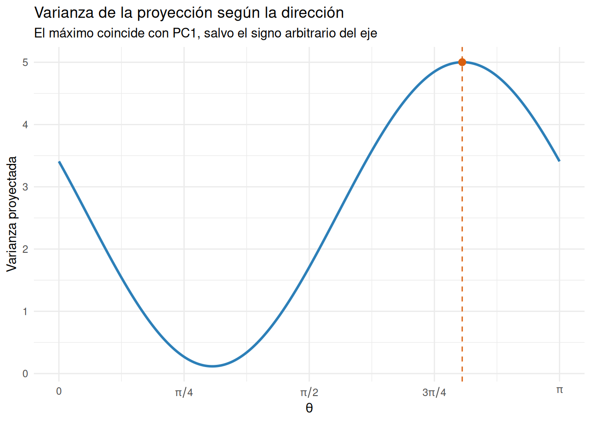
Estas tres operaciones cumplen funciones distintas.
Centrar una variable,
\[ X_j^{(c)}=X_j-\bar X_j, \]
traslada el origen al centro de la nube. No cambia las distancias entre individuos, la forma de la nube ni las correlaciones.
Estandarizar,
\[ X_j^{(e)}=\frac{X_j-\bar X_j}{s_j}, \]
también modifica la escala de cada eje. Desde el punto de vista geométrico no es una mera traslación: altera las distancias y qué direcciones se consideran más variables. Por eso puede cambiar las componentes principales.
Cambiar de base es lo que hace PCA una vez elegida la geometría de trabajo: construye ejes ortogonales nuevos. En resumen,
\[ \text{centrar}\neq\text{escalar}\neq\text{cambiar de base}. \]
datos_originales <- as_tibble(X_sim) |>
transmute(x1 = x1 + 2.5, x2 = 1.6 * x2 - 2)
datos_centrados <- datos_originales |>
mutate(across(everything(), ~ .x - mean(.x)))
datos_estandarizados <- datos_originales |>
mutate(across(everything(), ~ as.numeric(scale(.x))))
pca_transformacion <- prcomp(datos_estandarizados, center = FALSE, scale. = FALSE)
paneles_transformacion <- bind_rows(
datos_originales |> mutate(etapa = "1. Datos originales"),
datos_centrados |> mutate(etapa = "2. Datos centrados"),
datos_estandarizados |> mutate(etapa = "3. Datos estandarizados"),
datos_estandarizados |> mutate(etapa = "4. Ejes PCA tras estandarizar")
)
ejes_transformacion <- tibble(
x = 0, y = 0,
xend = pca_transformacion$rotation[1, ] * pca_transformacion$sdev * 2,
yend = pca_transformacion$rotation[2, ] * pca_transformacion$sdev * 2,
etapa = "4. Ejes PCA tras estandarizar",
componente = c("PC1", "PC2")
)
paneles_transformacion |>
ggplot(aes(x1, x2)) +
geom_point(color = "gray40", alpha = 0.65, size = 1.2) +
geom_segment(
data = ejes_transformacion,
aes(x = x, y = y, xend = xend, yend = yend, color = componente),
arrow = grid::arrow(length = grid::unit(0.13, "cm")),
linewidth = 0.9,
inherit.aes = FALSE
) +
facet_wrap(vars(etapa), ncol = 2) +
coord_equal() +
labs(title = "Centrar, escalar y construir ejes nuevos", x = "x1", y = "x2", color = NULL) +
theme_minimal()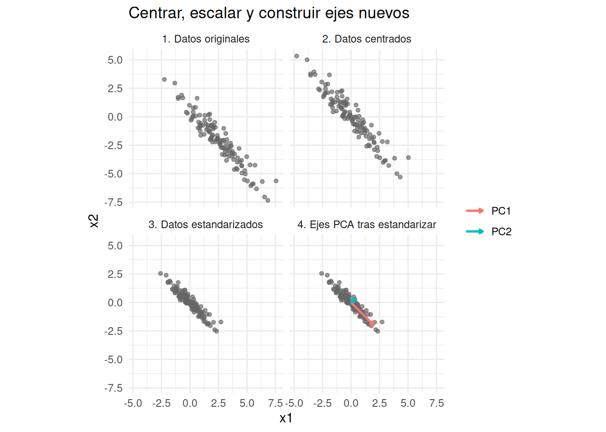
Sea \(X\) la matriz de datos centrada, con los individuos en las filas, y
\[ S=\frac{1}{n-1}X^\top X \]
su matriz de covarianzas. Para una dirección unitaria \(a\), los scores son \(Xa\) y su varianza es
\[ \operatorname{Var}(Xa)=a^\top Sa. \]
La primera componente resuelve
\[ \max_a a^\top Sa \qquad\text{sujeto a}\qquad a^\top a=1. \]
La restricción impide aumentar artificialmente la varianza multiplicando los coeficientes por una constante.
Usamos el multiplicador de Lagrange
\[ \mathcal L(a,\lambda) =a^\top Sa-\lambda(a^\top a-1). \]
Al derivar respecto de \(a\),
\[ \nabla_a\mathcal L=2Sa-2\lambda a=0, \]
y, por tanto,
\[ \boxed{Sa=\lambda a}. \]
Las direcciones candidatas son los autovectores de \(S\). Si multiplicamos por \(a^\top\) y usamos \(a^\top a=1\),
\[ a^\top Sa=\lambda a^\top a=\lambda. \]
Así,
\[ \boxed{\operatorname{Var}(PC_k)=\lambda_k}. \]
El autovector determina la dirección y su autovalor mide la varianza capturada. PC1 usa el autovector asociado al mayor autovalor.
La segunda componente resuelve el mismo problema añadiendo ortogonalidad respecto de la primera:
\[ \max_a a^\top Sa \quad\text{sujeto a}\quad a^\top a=1, \qquad a^\top a_1=0. \]
El resultado es el autovector del segundo mayor autovalor, y así sucesivamente. Si reunimos los autovectores como columnas de \(A\),
\[ S=A\Lambda A^\top, \qquad A^\top A=I, \]
y definimos los scores \(Z=XA\), entonces
\[ \operatorname{Cov}(Z)=A^\top SA=\Lambda. \]
Esta igualdad resume tres hechos: las componentes están incorreladas, la varianza de PC\(_k\) es \(\lambda_k\) y la covarianza queda diagonal en el nuevo sistema.
Cuando hay autovalores iguales, las direcciones individuales dentro de su subespacio pueden no ser únicas. El subespacio representado sí es el mismo.
La varianza total es la suma de las varianzas originales:
\[ \operatorname{tr}(S)=\lambda_1+\cdots+\lambda_p. \]
PCA no crea varianza: la redistribuye entre ejes nuevos, ordenados de mayor a menor. La proporción explicada por PC\(_k\) es
\[ \frac{\lambda_k}{\sum_{m=1}^p\lambda_m}. \]
prcomp()El PCA también puede obtenerse sin formar explícitamente \(S\). Para una matriz centrada,
\[ X=UDV^\top. \]
Entonces,
\[ S=\frac{1}{n-1}X^\top X =V\frac{D^2}{n-1}V^\top. \]
Por tanto,
\[ A=V, \qquad \lambda_k=\frac{d_k^2}{n-1}, \qquad Z=XV=UD. \]
prcomp() usa esta descomposición SVD, que suele ser numéricamente preferible a calcular eigen(cov(X)).
Para datos centrados,
\[ \operatorname{rank}(X)\leq\min(n-1,p). \]
En particular, si \(p>n\), puede haber como máximo \(n-1\) componentes con varianza positiva.
mtcarsUsaremos seis variables numéricas para conectar las fórmulas con un ejemplo pequeño. Como tienen unidades y dispersiones diferentes, el análisis principal se realiza sobre variables estandarizadas.
X <- mtcars |>
select(mpg, disp, hp, drat, wt, qsec)
Xsc <- scale(X)
S <- cov(Xsc)
eig <- eigen(S)
pca_mtcars <- prcomp(X, center = TRUE, scale. = TRUE)
kable(summary(pca_mtcars)$importance, digits = 3)| PC1 | PC2 | PC3 | PC4 | PC5 | PC6 | |
|---|---|---|---|---|---|---|
| Standard deviation | 2.046 | 1.071 | 0.577 | 0.393 | 0.353 | 0.228 |
| Proportion of Variance | 0.698 | 0.191 | 0.056 | 0.026 | 0.021 | 0.009 |
| Cumulative Proportion | 0.698 | 0.889 | 0.945 | 0.971 | 0.991 | 1.000 |
kable(round(pca_mtcars$rotation, 3), caption = "Coeficientes de las componentes")| PC1 | PC2 | PC3 | PC4 | PC5 | PC6 | |
|---|---|---|---|---|---|---|
| mpg | -0.459 | -0.059 | 0.195 | -0.782 | 0.111 | -0.352 |
| disp | 0.466 | 0.061 | -0.097 | -0.600 | -0.295 | 0.568 |
| hp | 0.426 | -0.361 | -0.146 | -0.123 | 0.806 | -0.048 |
| drat | -0.367 | -0.437 | -0.800 | -0.023 | -0.144 | 0.113 |
| wt | 0.439 | 0.300 | -0.418 | -0.104 | -0.230 | -0.692 |
| qsec | -0.253 | 0.763 | -0.341 | -0.043 | 0.422 | 0.242 |
Los elementos principales del resultado son:
rotation: autovectores o coeficientes usados para construir las componentes;x: scores, es decir, coordenadas de los individuos;sdev: desviaciones típicas de las componentes;sdev^2: autovalores o varianzas de las componentes.tibble(
componente = colnames(pca_mtcars$x),
`Varianza de los scores` = apply(pca_mtcars$x, 2, var),
Autovalor = pca_mtcars$sdev^2
) |>
mutate(across(where(is.numeric), ~ round(.x, 4))) |>
kable(caption = "El autovalor es la varianza de la componente")| componente | Varianza de los scores | Autovalor |
|---|---|---|
| PC1 | 4.1874 | 4.1874 |
| PC2 | 1.1481 | 1.1481 |
| PC3 | 0.3334 | 0.3334 |
| PC4 | 0.1544 | 0.1544 |
| PC5 | 0.1248 | 0.1248 |
| PC6 | 0.0520 | 0.0520 |
Si \(A\) es la matriz de autovectores, los scores son
\[ Z=XA. \]
Los coeficientes \(a_{jk}\) indican cómo entra la variable \(X_j\) en la combinación lineal
\[ PC_k=a_{1k}X_1+\cdots+a_{pk}X_p. \]
En cambio, los scores indican dónde queda cada individuo en los ejes nuevos.
scores <- as_tibble(pca_mtcars$x, rownames = "coche")
scores |>
select(coche, PC1, PC2) |>
slice_head(n = 6) |>
mutate(across(c(PC1, PC2), ~ round(.x, 2))) |>
kable(caption = "Primeros scores")| coche | PC1 | PC2 |
|---|---|---|
| Mazda RX4 | -0.84 | -0.87 |
| Mazda RX4 Wag | -0.81 | -0.56 |
| Datsun 710 | -1.69 | 0.04 |
| Hornet 4 Drive | -0.10 | 1.29 |
| Hornet Sportabout | 1.29 | 0.01 |
| Valiant | 0.22 | 2.01 |
scores |>
mutate(transmision = factor(mtcars$am, labels = c("automático", "manual"))) |>
ggplot(aes(PC1, PC2, color = transmision)) +
geom_hline(yintercept = 0, color = "gray75") +
geom_vline(xintercept = 0, color = "gray75") +
geom_point(size = 2, alpha = 0.85) +
labs(title = "Individuos en el plano PCA", color = "Transmisión") +
theme_minimal()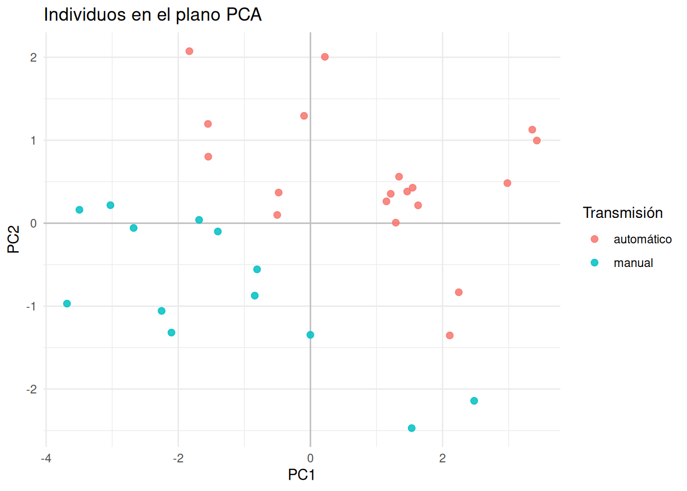
Puntos cercanos tienen perfiles parecidos en las variables activas, con una cautela: si PC1–PC2 explica poca varianza, las proximidades de ese plano pueden ser engañosas.
El signo de una componente es arbitrario. Si \(a_k\) es una solución, \(-a_k\) también lo es; los scores cambian simultáneamente de \(Xa_k\) a \(-Xa_k\), sin alterar distancias, varianzas ni interpretación relativa. Por eso no conviene comparar signos entre programas sin tener en cuenta esta ambigüedad.
El coeficiente de una variable y su correlación con una componente son cantidades distintas. En un PCA estandarizado, las coordenadas de las variables son
\[ \operatorname{Cor}(X_j,PC_k) =a_{jk}\sqrt{\lambda_k}. \]
Como pca_mtcars$sdev[k] es \(\sqrt{\lambda_k}\), calculamos todas las coordenadas mediante:
coord_var <- sweep(
pca_mtcars$rotation,
2,
pca_mtcars$sdev,
"*"
)
coord_var_check <- cor(Xsc, pca_mtcars$x)
stopifnot(isTRUE(all.equal(unname(coord_var), unname(coord_var_check))))En distintos libros y paquetes, loading puede referirse a convenciones diferentes. Aquí distinguimos coeficientes de la componente (rotation) y coordenadas de las variables (correlaciones variable–componente).
circulo <- tibble(
angulo = seq(0, 2 * pi, length.out = 361),
x = cos(angulo),
y = sin(angulo)
)
coord_var_12 <- as_tibble(coord_var[, 1:2, drop = FALSE], rownames = "variable")
ggplot() +
geom_path(data = circulo, aes(x, y), color = "gray55") +
geom_hline(yintercept = 0, linetype = "dashed", color = "gray70") +
geom_vline(xintercept = 0, linetype = "dashed", color = "gray70") +
geom_segment(
data = coord_var_12,
aes(x = 0, y = 0, xend = PC1, yend = PC2),
arrow = grid::arrow(length = grid::unit(0.14, "cm")),
color = "#2c7fb8", linewidth = 0.8
) +
geom_text(
data = coord_var_12,
aes(PC1, PC2, label = variable),
nudge_y = 0.045, size = 3.5
) +
coord_equal(xlim = c(-1.08, 1.08), ylim = c(-1.08, 1.08)) +
labs(title = "Círculo de correlaciones", x = "PC1", y = "PC2") +
theme_minimal()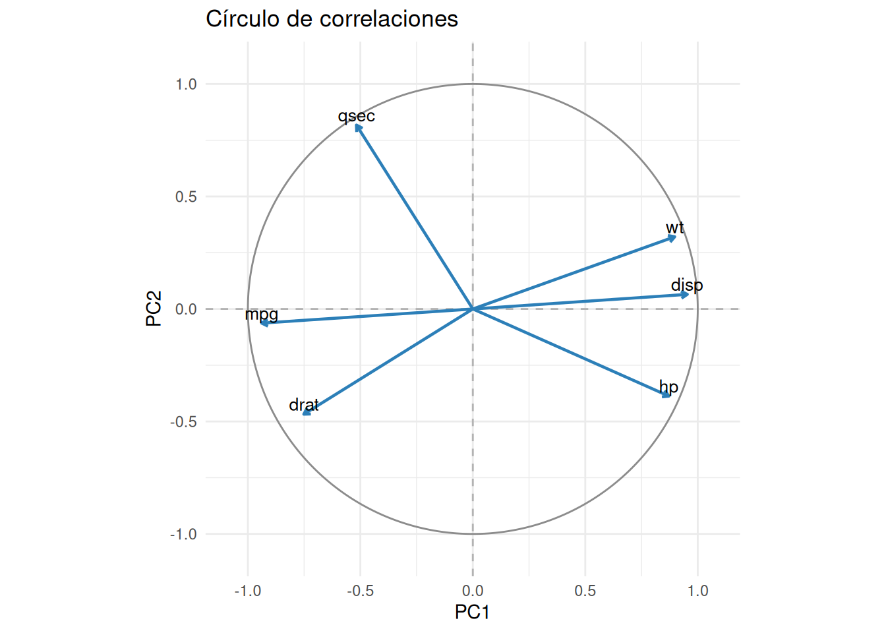
Flechas próximas sugieren correlación positiva; flechas opuestas, correlación negativa; flechas aproximadamente perpendiculares, asociación lineal débil. Una longitud próxima a uno indica buena representación en PC1–PC2. La lectura angular es aproximada porque solo mostramos dos componentes.
Estas medidas responden a preguntas diferentes.
| Cantidad | Fórmula en PCA estandarizado | Pregunta |
|---|---|---|
| Coeficiente | \(a_{jk}\) | ¿Cómo entra \(X_j\) en PC\(_k\)? |
| Coordenada | \(\sqrt{\lambda_k}a_{jk}\) | ¿Qué correlación tiene \(X_j\) con PC\(_k\)? |
| Cos² | \(\lambda_k a_{jk}^2\) | ¿Qué bien representa PC\(_k\) a \(X_j\)? |
| Contribución | \(a_{jk}^2\) | ¿Cuánto participa \(X_j\) en la construcción de PC\(_k\)? |
Para una variable estandarizada,
\[ \cos^2_{jk}=\operatorname{Cor}(X_j,PC_k)^2 =\lambda_k a_{jk}^2. \]
Por eso no se obtiene elevando directamente rotation al cuadrado. La calidad en el plano PC1–PC2 es
\[ \cos^2_j(PC1,PC2) =\operatorname{Cor}(X_j,PC_1)^2 +\operatorname{Cor}(X_j,PC_2)^2. \]
Un valor próximo a uno significa que casi toda la variabilidad de la variable es visible en el plano.
cos2_var <- coord_var^2
cos2_var_plano <- rowSums(cos2_var[, 1:2, drop = FALSE])
stopifnot(isTRUE(all.equal(
unname(rowSums(cos2_var)),
rep(1, nrow(cos2_var))
)))
as_tibble(cos2_var, rownames = "variable") |>
pivot_longer(-variable, names_to = "componente", values_to = "cos2") |>
ggplot(aes(componente, variable, fill = cos2)) +
geom_tile(color = "white") +
geom_text(aes(label = sprintf("%.2f", cos2)), size = 3) +
labs(title = "Cos² de las variables", x = "Componente", y = NULL, fill = "Cos²") +
theme_minimal()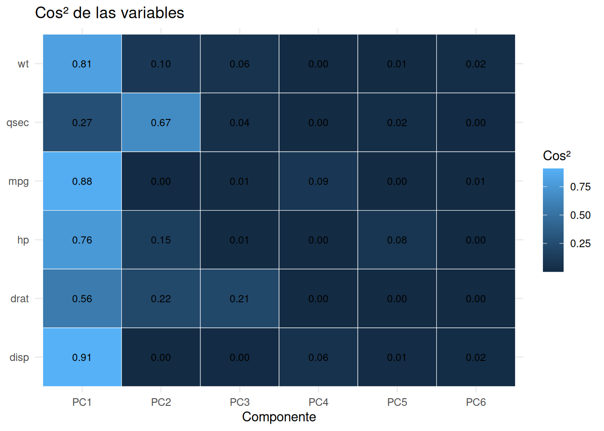
tibble(
variable = names(cos2_var_plano),
cos2_plano = as.numeric(cos2_var_plano)
) |>
ggplot(aes(cos2_plano, reorder(variable, cos2_plano))) +
geom_col(fill = "#2c7fb8", alpha = 0.85) +
scale_x_continuous(limits = c(0, 1)) +
labs(
title = "Calidad de representación en el plano PC1-PC2",
x = "Cos² en el plano", y = NULL
) +
theme_minimal()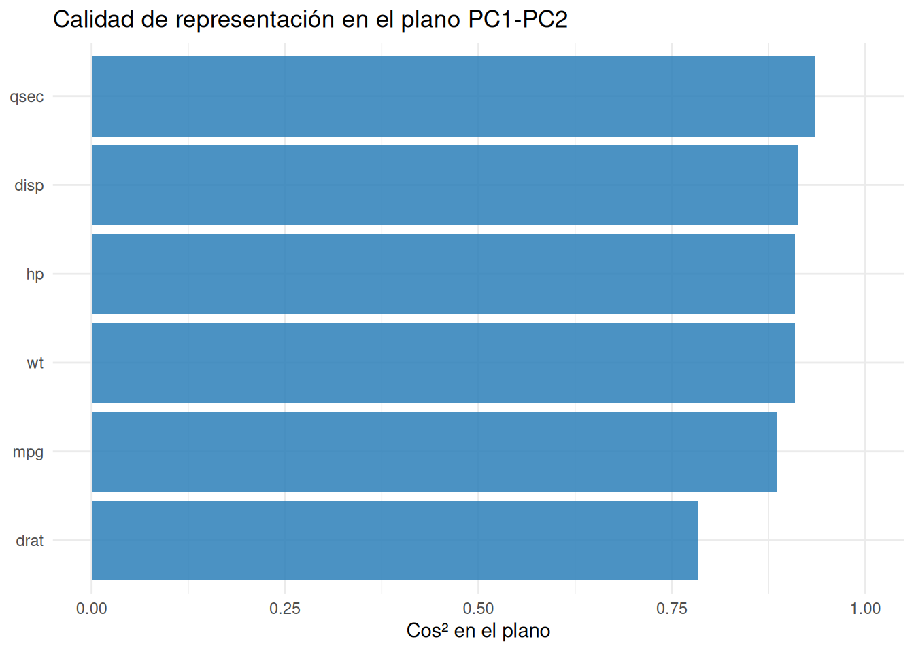
La contribución relativa de \(X_j\) a PC\(_k\) es
\[ \operatorname{ctr}_{jk} =\frac{\operatorname{Cor}(X_j,PC_k)^2}{\lambda_k} =a_{jk}^2. \]
En porcentaje es \(100a_{jk}^2\). Como cada autovector tiene norma uno, las contribuciones a una componente suman 100%.
contrib_var <- 100 * pca_mtcars$rotation^2
stopifnot(isTRUE(all.equal(
unname(colSums(contrib_var)),
rep(100, ncol(contrib_var))
)))
as_tibble(contrib_var[, 1:2, drop = FALSE], rownames = "variable") |>
pivot_longer(-variable, names_to = "componente", values_to = "contribucion") |>
group_by(componente) |>
arrange(desc(contribucion), .by_group = TRUE) |>
ungroup() |>
mutate(contribucion = round(contribucion, 1)) |>
kable(caption = "Contribución de las variables a PC1 y PC2 (%)")| variable | componente | contribucion |
|---|---|---|
| disp | PC1 | 21.7 |
| mpg | PC1 | 21.0 |
| wt | PC1 | 19.2 |
| hp | PC1 | 18.1 |
| drat | PC1 | 13.5 |
| qsec | PC1 | 6.4 |
| qsec | PC2 | 58.2 |
| drat | PC2 | 19.1 |
| hp | PC2 | 13.1 |
| wt | PC2 | 9.0 |
| disp | PC2 | 0.4 |
| mpg | PC2 | 0.3 |
El cos² pregunta si una variable queda bien representada; la contribución pregunta cuánto ayudó a construir el eje. Una variable puede contribuir mucho a una componente sin que el plano completo represente bien toda su variabilidad.
Para el individuo \(i\), con scores \(z_{ik}\),
\[ d_i^2=\sum_{k=1}^p z_{ik}^2, \qquad \cos^2_{ik}=\frac{z_{ik}^2}{d_i^2}. \]
En PC1–PC2,
\[ \cos^2_i(PC1,PC2) =\frac{z_{i1}^2+z_{i2}^2}{\sum_{k=1}^p z_{ik}^2}. \]
Mide qué proporción de la distancia del individuo al centro queda visible en el plano.
scores_all <- pca_mtcars$x
dist2_ind <- rowSums(scores_all^2)
cos2_ind <- sweep(scores_all^2, 1, dist2_ind, "/")
cos2_ind_plano <- rowSums(cos2_ind[, 1:2, drop = FALSE])
stopifnot(isTRUE(all.equal(
unname(rowSums(cos2_ind)),
rep(1, nrow(cos2_ind))
)))
tibble(
coche = rownames(scores_all),
PC1 = scores_all[, 1],
PC2 = scores_all[, 2],
cos2_plano = cos2_ind_plano,
transmision = factor(mtcars$am, labels = c("automático", "manual"))
) |>
ggplot(aes(PC1, PC2, color = transmision, size = cos2_plano)) +
geom_hline(yintercept = 0, color = "gray80") +
geom_vline(xintercept = 0, color = "gray80") +
geom_point(alpha = 0.8) +
scale_size_continuous(range = c(1.5, 5), limits = c(0, 1)) +
labs(
title = "Calidad de representación de los individuos",
subtitle = "El tamaño representa el cos² en PC1-PC2",
color = "Transmisión", size = "Cos²"
) +
theme_minimal()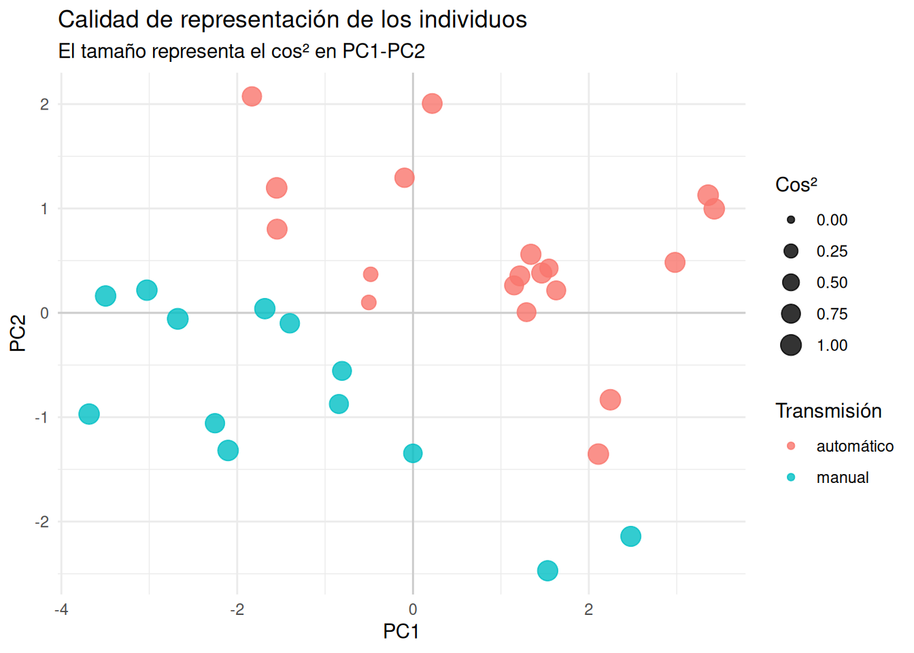
Para ver por qué cambia la calidad, comparamos automáticamente el individuo mejor representado con el peor representado en el plano.
calidad_individuos <- tibble(
coche = rownames(scores_all),
cos2_plano = cos2_ind_plano
)
individuos_extremos <- bind_rows(
calidad_individuos |> slice_max(cos2_plano, n = 1, with_ties = FALSE),
calidad_individuos |> slice_min(cos2_plano, n = 1, with_ties = FALSE)
) |>
mutate(calidad = c("Cos² alto", "Cos² bajo"))
as_tibble(scores_all, rownames = "coche") |>
semi_join(individuos_extremos, by = "coche") |>
pivot_longer(-coche, names_to = "componente", values_to = "score") |>
left_join(individuos_extremos, by = "coche") |>
ggplot(aes(componente, score, fill = calidad)) +
geom_col(show.legend = FALSE) +
facet_wrap(vars(coche, calidad), ncol = 1) +
labs(
title = "Scores a través de todas las componentes",
subtitle = "En el segundo caso, componentes posteriores contienen una parte mayor de la distancia",
x = NULL, y = "Score"
) +
theme_minimal()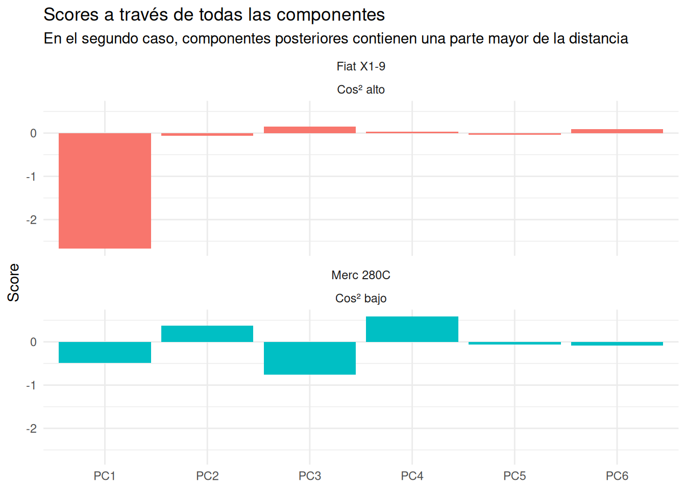
Un mapa de individuos representa scores; un círculo de correlaciones representa correlaciones variable–componente. Un biplot los superpone, pero ambos objetos no están necesariamente en la misma escala numérica y la interpretación depende de la convención usada.
En el siguiente biplot exploratorio conservamos las direcciones del círculo de correlaciones y multiplicamos todas las flechas por un único factor para hacerlas visibles sobre el mapa de scores. Su longitud solo es interpretable de forma relativa; para leer correlaciones deben usarse las coordenadas del círculo anterior.
factor_flechas <- 0.75 * max(sqrt(rowSums(pca_mtcars$x[, 1:2]^2)))
biplot_variables <- coord_var_12 |>
mutate(
PC1 = PC1 * factor_flechas,
PC2 = PC2 * factor_flechas
)
biplot_individuos <- scores |>
mutate(transmision = factor(mtcars$am, labels = c("automático", "manual")))
ggplot(biplot_individuos, aes(PC1, PC2, color = transmision)) +
geom_point(alpha = 0.65) +
geom_segment(
data = biplot_variables,
aes(x = 0, y = 0, xend = PC1, yend = PC2),
inherit.aes = FALSE,
arrow = grid::arrow(length = grid::unit(0.14, "cm")),
color = "black"
) +
geom_text(
data = biplot_variables,
aes(PC1, PC2, label = variable),
inherit.aes = FALSE, nudge_y = 0.18, size = 3.3
) +
labs(
title = "Biplot exploratorio de mtcars",
subtitle = "Las flechas se han reescalado por un único factor gráfico",
color = "Transmisión"
) +
theme_minimal()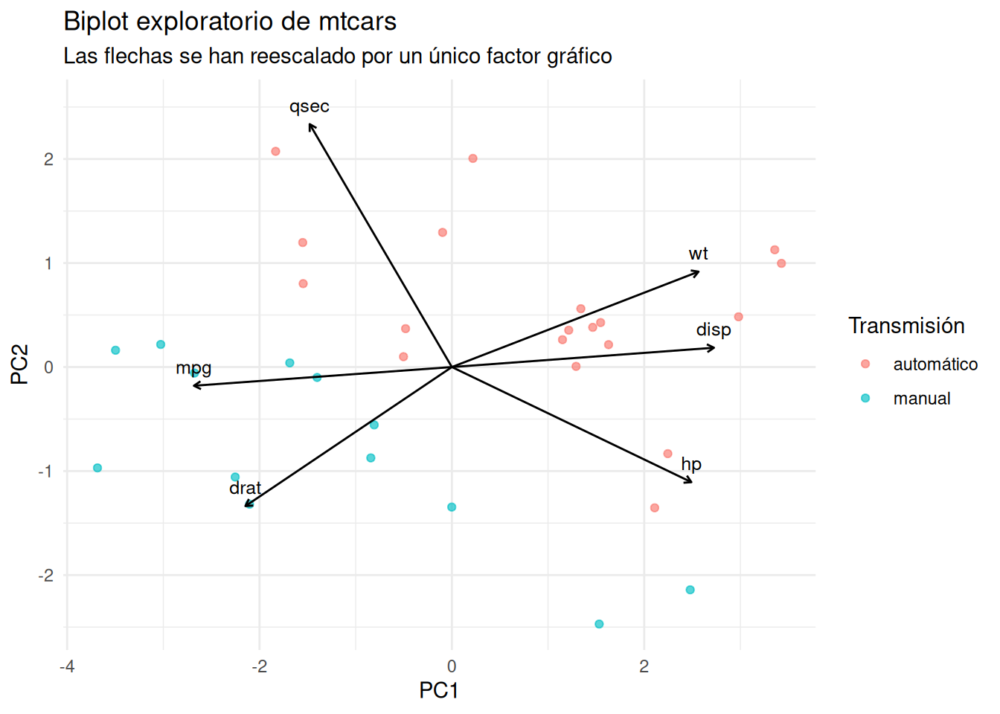
var_exp <- pca_mtcars$sdev^2 / sum(pca_mtcars$sdev^2)
resumen_varianza <- tibble(
componente = factor(
paste0("PC", seq_along(var_exp)),
levels = paste0("PC", seq_along(var_exp))
),
varianza = var_exp,
acumulada = cumsum(var_exp)
)
resumen_varianza |>
ggplot(aes(componente, varianza, group = 1)) +
geom_col(fill = "#4c78a8", alpha = 0.8) +
geom_line(color = "#222222") +
geom_point(size = 2) +
labs(title = "Varianza explicada", x = "Componente", y = "Proporción de varianza") +
theme_minimal()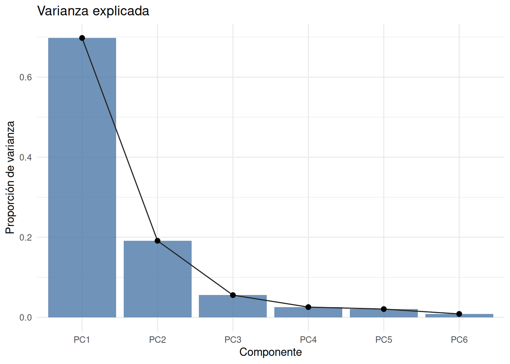
resumen_varianza |>
mutate(across(c(varianza, acumulada), ~ round(.x, 3))) |>
kable()| componente | varianza | acumulada |
|---|---|---|
| PC1 | 0.698 | 0.698 |
| PC2 | 0.191 | 0.889 |
| PC3 | 0.056 | 0.945 |
| PC4 | 0.026 | 0.971 |
| PC5 | 0.021 | 0.991 |
| PC6 | 0.009 | 1.000 |
No existe un único número correcto de componentes con independencia del objetivo.
| Objetivo | Criterio principal |
|---|---|
| Visualización | 2–3 componentes, informando de la varianza representada |
| Resumen descriptivo | Varianza acumulada e interpretabilidad |
| Compresión | Error de reconstrucción |
| Eliminar redundancia | Autovalores pequeños y forma del scree plot |
| Preprocesamiento predictivo | Rendimiento validado del modelo posterior |
| Distinguir estructura de ruido | Criterios auxiliares como análisis paralelo |
En un PCA de la matriz de correlaciones, la regla de Kaiser conserva componentes con \(\lambda_k>1\): cada una explica más que una variable estandarizada promedio. Es una referencia, no una decisión automática.
El análisis paralelo compara los autovalores observados con los de datos aleatorios de las mismas dimensiones. Aquí usamos el percentil 95 de 500 simulaciones independientes.
set.seed(321)
B <- 500
autovalores_aleatorios <- replicate(
B,
eigen(
cor(matrix(rnorm(nrow(X) * ncol(X)), nrow = nrow(X), ncol = ncol(X))),
symmetric = TRUE,
only.values = TRUE
)$values
)
referencia_p95 <- apply(autovalores_aleatorios, 1, quantile, probs = 0.95)
tibble(
componente = factor(
paste0("PC", seq_len(ncol(X))),
levels = paste0("PC", seq_len(ncol(X)))
),
Observado = pca_mtcars$sdev^2,
`Percentil 95 aleatorio` = referencia_p95
) |>
pivot_longer(-componente, names_to = "serie", values_to = "autovalor") |>
ggplot(aes(componente, autovalor, color = serie, group = serie)) +
geom_line() +
geom_point(size = 2) +
labs(
title = "Scree plot con referencia aleatoria",
x = "Componente", y = "Autovalor", color = NULL
) +
theme_minimal()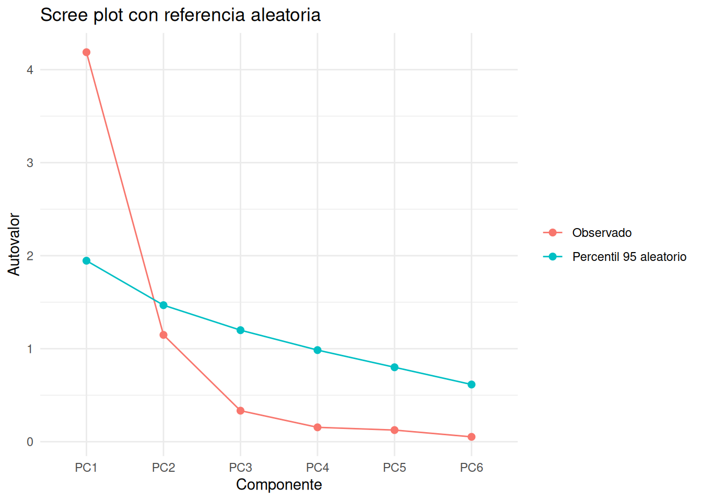
El análisis paralelo también es un criterio complementario: la decisión debe responder al uso posterior y al coste de perder información.
La elección entre ambas geometrías no es automática. Usar covarianzas conserva las unidades originales; estandarizar equivale a usar correlaciones y da varianza inicial uno a cada variable.
kable(round(cov(X), 2), caption = "Matriz de covarianzas")| mpg | disp | hp | drat | wt | qsec | |
|---|---|---|---|---|---|---|
| mpg | 36.32 | -633.10 | -320.73 | 2.20 | -5.12 | 4.51 |
| disp | -633.10 | 15360.80 | 6721.16 | -47.06 | 107.68 | -96.05 |
| hp | -320.73 | 6721.16 | 4700.87 | -16.45 | 44.19 | -86.77 |
| drat | 2.20 | -47.06 | -16.45 | 0.29 | -0.37 | 0.09 |
| wt | -5.12 | 107.68 | 44.19 | -0.37 | 0.96 | -0.31 |
| qsec | 4.51 | -96.05 | -86.77 | 0.09 | -0.31 | 3.19 |
kable(round(cor(X), 2), caption = "Matriz de correlaciones")| mpg | disp | hp | drat | wt | qsec | |
|---|---|---|---|---|---|---|
| mpg | 1.00 | -0.85 | -0.78 | 0.68 | -0.87 | 0.42 |
| disp | -0.85 | 1.00 | 0.79 | -0.71 | 0.89 | -0.43 |
| hp | -0.78 | 0.79 | 1.00 | -0.45 | 0.66 | -0.71 |
| drat | 0.68 | -0.71 | -0.45 | 1.00 | -0.71 | 0.09 |
| wt | -0.87 | 0.89 | 0.66 | -0.71 | 1.00 | -0.17 |
| qsec | 0.42 | -0.43 | -0.71 | 0.09 | -0.17 | 1.00 |
pca_mtcars_cov <- prcomp(X, center = TRUE, scale. = FALSE)
pca_mtcars_cor <- prcomp(X, center = TRUE, scale. = TRUE)
tibble(
componente = colnames(summary(pca_mtcars_cov)$importance),
covarianzas = round(summary(pca_mtcars_cov)$importance[2, ], 3),
correlaciones = round(summary(pca_mtcars_cor)$importance[2, ], 3)
) |>
kable(caption = "Proporción de varianza explicada")| componente | covarianzas | correlaciones |
|---|---|---|
| PC1 | 0.927 | 0.698 |
| PC2 | 0.072 | 0.191 |
| PC3 | 0.000 | 0.056 |
| PC4 | 0.000 | 0.026 |
| PC5 | 0.000 | 0.021 |
| PC6 | 0.000 | 0.009 |
Sin escalar, las variables con mayor dispersión en sus unidades originales tienen más influencia. Escalar modifica la pregunta: no es una corrección universal, sino una decisión sustantiva sobre qué diferencias deben contar.
Si retenemos \(q<p\) componentes y definimos
\[ A_q=(a_1,\ldots,a_q), \qquad Z_q=XA_q, \]
la reconstrucción en el espacio original centrado es
\[ \boxed{\hat X_q=Z_qA_q^\top=XA_qA_q^\top}. \]
La matriz \(P_q=A_qA_q^\top\) proyecta sobre el subespacio generado por las primeras \(q\) componentes. Con la convención de covarianza que divide por \(n-1\),
\[ \|X-\hat X_q\|_F^2 =(n-1)\sum_{k=q+1}^{p}\lambda_k. \]
La varianza descartada es exactamente el error cuadrático de reconstrucción. Además, entre todas las aproximaciones lineales de rango \(q\), PCA minimiza ese error.
p <- ncol(Xsc)
lambda <- pca_mtcars$sdev^2
error_empirico <- sapply(seq_len(p), function(q) {
A_q <- pca_mtcars$rotation[, seq_len(q), drop = FALSE]
Z_q <- pca_mtcars$x[, seq_len(q), drop = FALSE]
X_aprox_q <- Z_q %*% t(A_q)
sum((Xsc - X_aprox_q)^2)
})
error_teorico <- sapply(seq_len(p), function(q) {
varianza_descartada <- if (q < p) sum(lambda[seq.int(q + 1, p)]) else 0
(nrow(Xsc) - 1) * varianza_descartada
})
tibble(
componentes = seq_len(p),
error_empirico = error_empirico,
error_teorico = error_teorico
) |>
pivot_longer(-componentes, names_to = "calculo", values_to = "error") |>
ggplot(aes(componentes, error, color = calculo)) +
geom_line() +
geom_point() +
scale_x_continuous(breaks = seq_len(p)) +
labs(
title = "Error de reconstrucción al añadir componentes",
x = "Número de componentes retenidas", y = "Error cuadrático", color = NULL
) +
theme_minimal()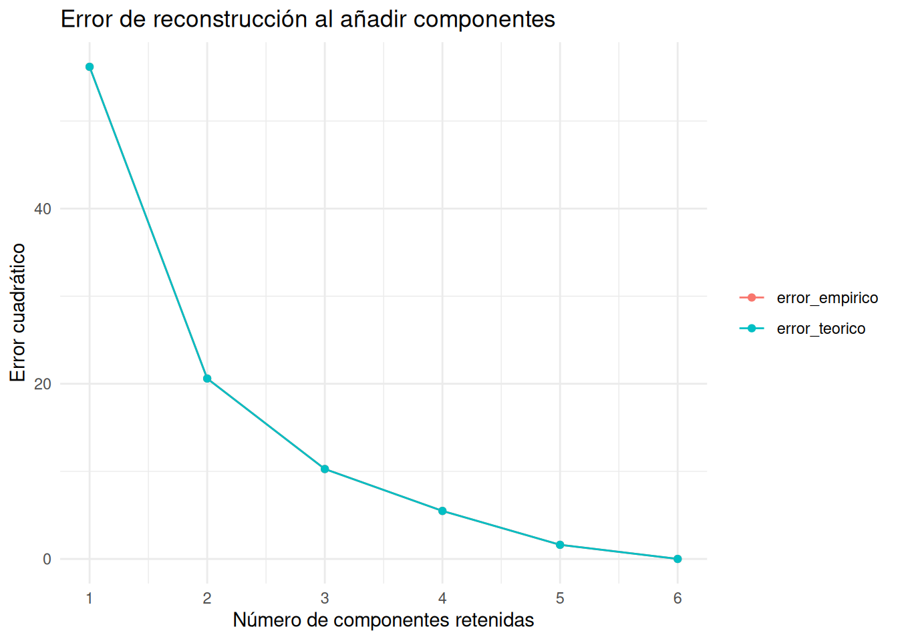
stopifnot(isTRUE(all.equal(error_empirico, error_teorico)))Retener componentes no elimina «variables poco importantes»: elimina direcciones de baja variabilidad. Elegir \(q\) equivale a aceptar un error de reconstrucción concreto.
PCA no conoce una variable respuesta ni nuestra pregunta científica. En el siguiente ejemplo, la mayor variabilidad está en la diagonal \(x=y\), pero los grupos externos se distinguen en la dirección perpendicular, de mucha menor varianza.
set.seed(456)
n_grupos <- 240
grupo <- factor(rep(c("Grupo A", "Grupo B"), each = n_grupos / 2))
u <- rnorm(n_grupos, sd = 3)
v <- ifelse(grupo == "Grupo A", -0.45, 0.45) + rnorm(n_grupos, sd = 0.16)
datos_grupos <- tibble(
x = (u + v) / sqrt(2),
y = (u - v) / sqrt(2),
grupo = grupo
)
pca_grupos <- prcomp(select(datos_grupos, x, y), center = TRUE, scale. = FALSE)
var_grupos <- 100 * pca_grupos$sdev^2 / sum(pca_grupos$sdev^2)
ejes_grupos <- tibble(
componente = paste0("PC", 1:2),
xend = pca_grupos$rotation[1, ] * pca_grupos$sdev * 2,
yend = pca_grupos$rotation[2, ] * pca_grupos$sdev * 2
)
datos_grupos |>
ggplot(aes(x, y, color = grupo)) +
geom_point(alpha = 0.65) +
geom_segment(
data = ejes_grupos,
aes(x = 0, y = 0, xend = xend, yend = yend),
inherit.aes = FALSE,
arrow = grid::arrow(length = grid::unit(0.16, "cm")),
color = "black", linewidth = 0.9
) +
geom_text(
data = ejes_grupos,
aes(xend, yend, label = componente),
inherit.aes = FALSE, nudge_y = 0.18
) +
coord_equal() +
labs(
title = "La dirección más variable no es la que separa los grupos",
subtitle = paste0(
"PC1 explica ", round(var_grupos[1], 1),
"% de la varianza; la separación externa está en PC2"
),
color = NULL
) +
theme_minimal()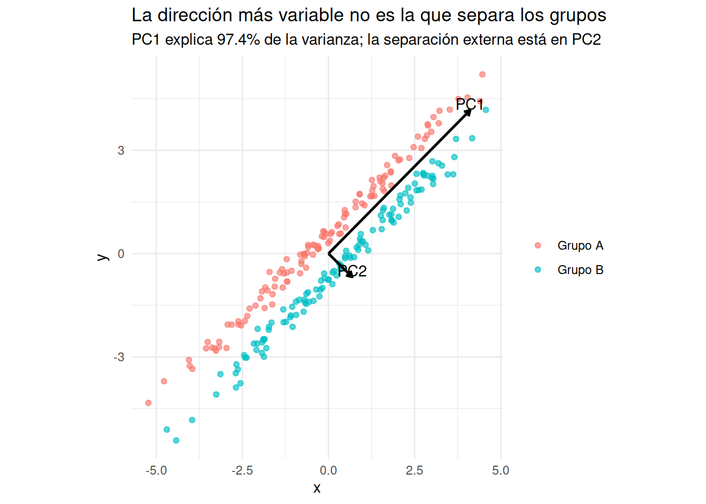
Una dirección de baja varianza puede ser predictiva o científicamente decisiva. PCA preserva estructura geométrica dominante, no relevancia supervisada.
PCA puede reducir ruido y colinealidad antes de clustering o clasificación. Por ejemplo, podemos agrupar los coches a partir de sus dos primeros scores:
set.seed(123)
cl_pca <- kmeans(pca_mtcars$x[, 1:2], centers = 3, nstart = 25)
kable(table(
cluster = cl_pca$cluster,
transmision = factor(mtcars$am, labels = c("automático", "manual"))
))| automático | manual |
|---|---|
| 0 | 6 |
| 12 | 2 |
| 7 | 5 |
Las componentes de mayor varianza no tienen por qué separar mejor una etiqueta externa como am.
Si PCA forma parte de un procedimiento predictivo, hay que evitar fuga de información:
Aunque PCA no usa la respuesta, sí aprende la distribución de las covariables. Calcularlo sobre todo el conjunto antes de validar puede producir leakage.
Que una componente explique mucha varianza no implica que sea causal, estable ni sustantivamente importante.
rotation con correlaciones variable–componente.rotation^2; eso da contribuciones, no cos².PCA proyecta una nube sobre ejes ortogonales que ordenan su variabilidad. Maximizar la varianza proyectada equivale a minimizar el error de reconstrucción, y la optimización conduce a los autovectores de la matriz de covarianzas o correlaciones. Los autovalores son las varianzas de los nuevos ejes; SVD permite obtenerlos directamente desde la matriz de datos.
Para interpretar el resultado hay que distinguir coeficientes, scores, coordenadas de variables, cos² y contribuciones. Retener \(q\) componentes significa proyectar sobre un subespacio de dimensión \(q\) y aceptar la varianza descartada como error de reconstrucción. Esa compresión puede ser útil, pero la máxima varianza no garantiza máxima relevancia externa.
mtcars con escalado e interpreta PC1 y PC2 usando coeficientes, contribuciones y círculo de correlaciones.mtcars con y sin escalado. Explica qué geometría responde a cada análisis.var(pca$x[, k]) coincide con pca$sdev[k]^2.sweep(rotation, 2, sdev, "*").mtcars con uno, dos y tres componentes y compara los errores con la suma de autovalores descartados.